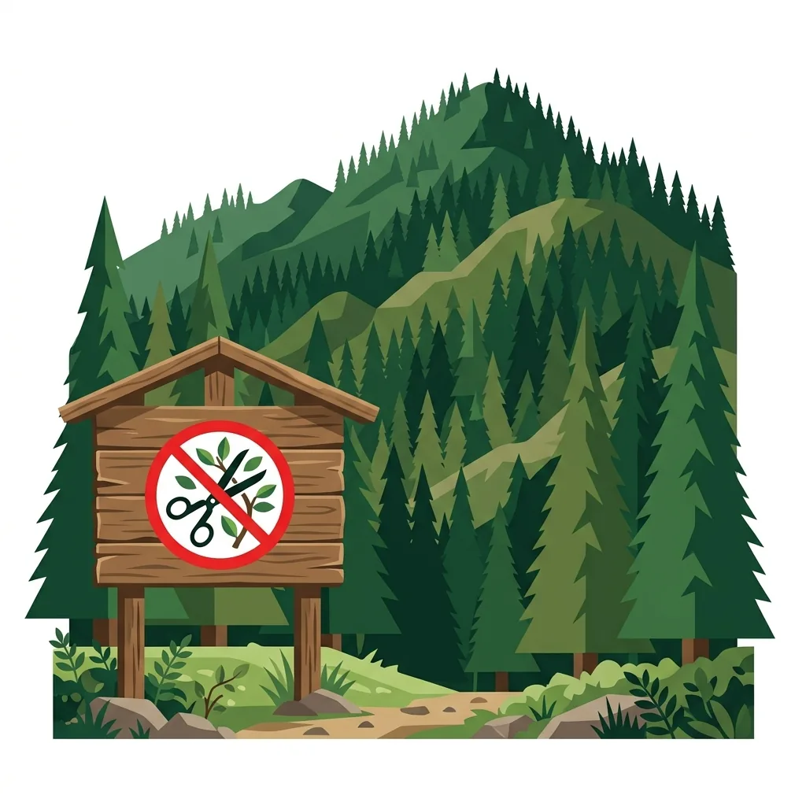
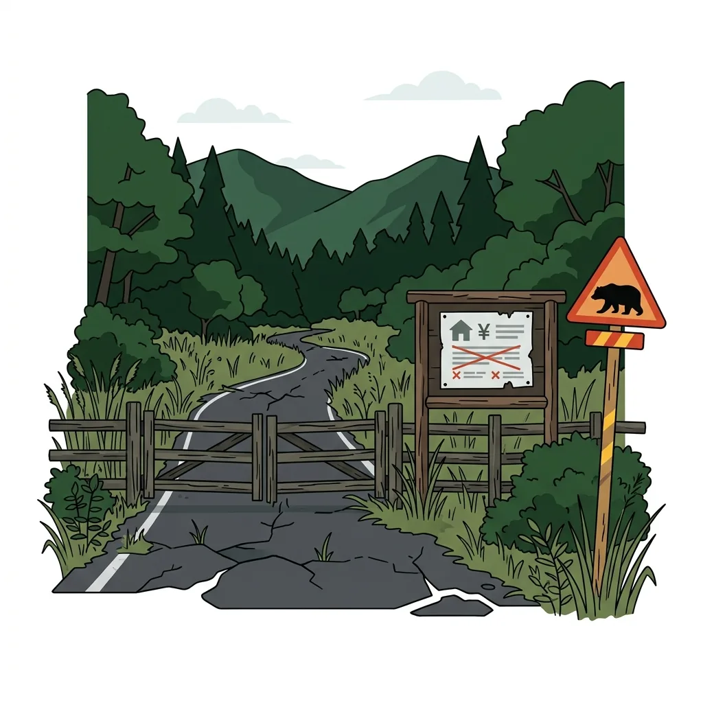
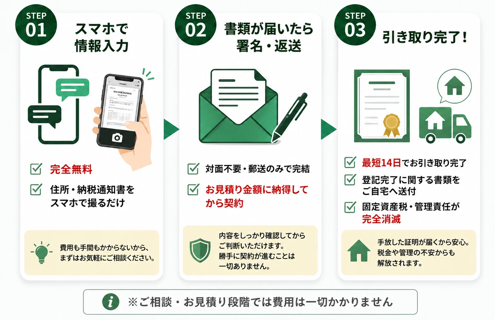

関西の山林・原野に特化
大阪・兵庫・京都・奈良・滋賀・和歌山売れない山林の処分方法・相続対策
山林を手放したい・売りたい方へ
山林の処分なら
「山林引取りサービス」
山林相続後の維持費用や管理義務の悩みから解放！
森林環境税・土砂災害責任・境界管理の悩みから解放
LINEで引き取り可否を無料診断 写真・住所を送るだけ｜概算費用も無料でご案内急傾斜地・保安林・
原野商法土地に対応
司法書士・土地家屋調査士と
ワンストップ対応
境界不明・
手入れなし山林でもOK

相続した実家や土地、
どうしたら良いの？
処分困難な「負動産」を抱える多くの方が、同じ葛藤を持っています。

どこに相談しても
「売れない」と断られた
仲介も買取も断られ、どこに相談していいか分からない。

毎年、固定資産税や維持費だけを
払い続けている
放置されたまま、維持コストだけが毎年引き落とされ続けている。

家具や荷物が残ったままで
片付ける費用も時間もない
古い家具やゴミが大量に残っており、遠方のため片付けられない。

相続登記の未了や境界の曖昧さで
トラブルにならないか不安
名義が昔のままだったり境界が分からず、揉め事にならないか心配。
ABOUT US / 私たちの想い
「売れない」と断られた物件を、
「売れない」と断られた物件を、
法的な安心と共にお引き受けします
単なる「処分」ではなく、専門事業者へバトンを繋ぐ「未来のためのリサイクル」。あなたの代で綺麗に整理し、次の世代へ。
負動産の有料処分に特化
郵送だけで完了する安全な手続き
司法書士・土地家屋調査士と専属連携
関西全域（京都・大阪・滋賀・兵庫・和歌山）対応

宅建業者・司法書士と連携
専門家3社が連携して 契約・登記・引き取りまで ワンストップ対応

受付・案内


調査・契約


不動産の悩みを解決し、
安心をお届けします
- 不要な不動産を手放せる
- 固定資産税などの負担から解放される
- 専門家のサポートで手続きも安心

コンプライアンス遵守で
安心してお任せいただけます
USE CASES / 想定ユースケース
このような「山林・原野・土地」のお引き取りを想定しています
「売れない」「手放したい」様々なご状況に合わせた、土地処分の具体的な想定ユースケースです。

CASE 01
相続したまま放置の
相続したまま放置の
「山林・原野」
相続したものの、一度も活用せず草木が生い茂り荒れ果てた山林でも、そのままお引き取りいたします。
CASE 02
地番のみで場所すら不明な
地番のみで場所すら不明な
「山林・原野」
祖父の代からの所有で「地番はわかるものの場所が全くわからない」「住宅地図やゼンリンにも載っていない」土地でも対応可能です。

CASE 03
飛地・接道なしの
飛地・接道なしの
「完全な陸の孤島」
道路に接しておらず、周囲を他人の土地に囲まれていて立ち入りすら困難な「飛地」や「無接道地」でも問題ありません。

CASE 04
土砂崩れや山火事の
土砂崩れや山火事の
「災害リスクがある土地」
大雨による土砂崩れ懸念や、昨今の乾燥による山火事リスクなど、将来的に所有者として負う莫大な賠償責任から解放されます。

CASE 05
枝切りや草刈り制限のある
枝切りや草刈り制限のある
「厳しい保安林」
国の指定（保安林）になっているため、枝を一本折ったり雑草を抜くレベルでも行政の許可申請が必要な管理負担から解放されます。

CASE 06
放置別荘地・
放置別荘地・
「通行費用トラブルのある土地」
熊の出没で危険な山や、バブル期の放置別荘地で開発業者から「私道の通行・整備費用」を請求され揉めている土地も対応します。
なぜ「有料引き取り」なのか？
確定したお見積り費用を一括でお支払いいただき、管理責任と将来の固定資産税・維持費を引き受けます。

引き取り後の「リサイクル」スキーム
専門パートナーへの確実なバトン引き継ぎによる価値の再循環

負動産リサイクルセンターが選ばれる3つの特徴
専属の専門ネットワークがあるからこそできる、安心の処分・引き取り体制


一目でわかる「他社・通常の仲介」との違い
当センターの負動産引き取りが選ばれる理由

国土交通省 公開資料（PDF）：安全な取引方針
「3つの安心宣言」
最後まで法的に安全な取引を徹底します。
費用・条件の明示、登記確認後の支払い、引取後の管理方針の提示という国土交通省資料の確認事項を取引設計の参考にしています。
01
費用・条件を明示
事前にすべてをご説明します
 費用の内訳を明確に提示
費用の内訳を明確に提示- 追加費用の発生条件を事前説明
- 契約書に費用・条件を明記
02
登記確認後にお支払い
所有権移転後の安全な決済
- 所有権移転登記の完了を確認
- 登記完了後にお支払い実行
- 司法書士が手続きをサポート
03
引き渡し後の責任完全免責
将来のリスクから完全に解放します
- 引き渡し後の責任を完全に免責
- 将来のトラブル・費用に一切関与しません
- 建物・土地の欠陥や管理責任も免責
国土交通省の確認事項に準拠
安心・安全な取引のためのポイント
国土交通省が示す有料引き取り利用時の確認事項に基づき、以下の項目を徹底しています。
安心のサポート体制 ＆ 対応エリア
シニア層やそのご家族が重視する「法的な確実性」と「地域窓口」
司法書士・専門家との緊密な連携
所有権の移転登記手続きは、提携する司法書士が法に則って確実に行います。
手続き完了後は、公的な書面（登記識別情報通知等）をもって、所有権移転の完了をご報告します。法的な管理責任は完全に解消されます。
地域別専用窓口（順次拡大中）
京都エリア窓口
【対応地域：京都北部（綾部・福知山・南丹・京丹波）】
地元のローカルネットワークと連携し、山林、原野、保安林、別荘地、雑種地などの早期引き取り査定を行っています。実績多数のエリアです。
滋賀エリア窓口
【対応地域：湖西・北部（大津・高島・長浜）】
比良山麓の放置別荘地やマキノ・今津の原野、湖北・余呉などの積雪地の山林を有料引き取りする地域専用窓口です。
兵庫エリア窓口
【対応地域：淡路島・山間部（但馬・丹波・西播磨）】
淡路島の放置別荘地や但馬の急傾斜山林、丹波や西播磨の相続山林・原野を有料引き取りする地域専用窓口です。
和歌山エリア窓口
【対応地域：有田川・紀美野・紀南山間部・高野山】
みかん畑や柿畑などの耕作放棄果樹園、土砂崩れ災害リスクのある紀南の急傾斜山林、山間部の原野・山林を有料引き取りする地域専用窓口です。
大阪エリア窓口
【対応地域：豊能ニュータウン・南河内山間部】
能勢・豊能の放置別荘地、千早赤阪村や金剛山麓の急傾斜山林、維持困難な原野・雑種地を有料引き取りする地域専用窓口です。
完全非対面・郵送のみの3つのステップ
＼ 来店も対面も不要。ご自宅にいながらスピーディに手放せます ／

よくある質問
山林・原野の引き取りに関して多く寄せられるご質問にお答えします
Q
本当にどんな物件でも引き取ってもらえますか？
A
はい、原則としてどのような物件でもお引き受け可能です。 他社で断られた崖地、再建築不可の狭小地、道路に面していない土地、境界が不明な山林、相続登記が未完了の古い空き家でも問題ありません。提携する宅建業者および専属の司法書士・土地家屋調査士チームが法的な調査から段取りまでダイレクトに行いますので、安心してお任せください。（※ただし、農地法の制限を受ける農地、抵当権などの担保権が設定されたままの物件、その他法的に移転が極めて困難な要因がある場合はお引き受けできない場合がございます。）
Q
「相続土地国庫帰属制度」や「自治体への寄付」と何が違うのですか？
A
国庫帰属や自治体寄付に比べて、引き取り対象の幅が広く手続きがスピーディーな点が大きく異なります。 国庫帰属制度や自治体への寄付は「境界確定」が必須条件となり、山林の境界確定には高額な測量費用（数十万〜数百万円）がかかる上、申請審査にも半年〜1年以上かかります。当センターでは境界が不明な山林や保安林などの難あり物件でも、現状のままスムーズにお引き取りが可能です。
Q
有料引き取りにかかる費用はどのくらいかかりますか？
A
物件の場所や固定資産税の額、将来の維持管理コスト、登記費用などを勘案して「一回限りの確定お見積り（処分代金）」をご提示します。 ご契約時にお提示した確定お見積もり額以上の追加費用が発生することは一切ありません。無料査定にて物件情報をお知らせいただければ、事前に概算費用をご案内いたします。
Q
引き取り後の管理責任や税金はどうなりますか？
A
提携司法書士が法務局へ所有権移転登記を完了した時点で、あなたからの法的な管理責任および固定資産税の納税義務は完全に消滅します。 登記完了後は、法的に名義が離れたことを証明する「登記事項証明書（登記簿謄本）」などの公的書面の写しを郵送にてお渡しいたします。
Q
現在、家庭裁判所で相続調停中（または遺産分割協議中）ですが、事前査定や相談はできますか？
A
はい、相続調停中や遺産分割協議の段階でも、事前のご相談や引き取り可否の確認、お見積りのご提示が可能です。 遺産分割の話し合いを行うにあたり、「引き取りにどの程度の費用がかかるか」を事前把握しておくことで、相続人間での客観的な判断材料としてご活用いただけます。（※所有権移転手続きは調停成立等により取得者が確定した後に提携司法書士とともに進められます。）
Q
兄弟や親族との「共有持分」だけを処分することはできますか？
A
はい、ご自身が所有する「共有持分のみ」の引き取り・所有権移転手続きが可能です。 他の共有者との話し合いが難航している場合や連絡が取れない状況であっても、お客様の持分単独でご相談・手放しを進めることができます。
Q
相続放棄をすれば、売れない山林の管理責任はすぐになくなりますか？
A
いいえ、相続放棄をしても次の管理者が決まるまでは管理責任が残る場合があります。 民法改正により保存義務が整理されましたが、土砂災害や倒木等の近隣トラブル・賠償責任のリスクが残ります。有料引き取りを活用して所有権移転登記を完了させることで、将来の管理リスクから確実に解放されます。
Q
契約手続きのために来店したり、担当者と対面したりする必要はありますか？
A
いいえ、完全に「対面不要・郵送完結」で手続きが完了します。 スマホやLINEでの査定後、契約書類や登記必要書類をご自宅へ郵送いたします。お客様は内容をご確認の上、サインと実印を押して返送していただくだけですので、遠方にお住まいの方でも自宅にいながら簡単にお手続きいただけます。
Q
相続登記が完了していないのですが、そのまま相談できますか？
A
はい、そのままご相談いただけます。 当センターの提携司法書士チームが、相続人の調査や必要な登記手続きの整理など、引き取りに必要な相続登記の段取りからワンストップで代行・サポートいたしますので、安心してお気軽にご相談ください。
「負動産」のお悩み、
法的な安心とともに解消します。
「処分したいけれどどうにもならない」「子供や孫に負の遺産を相続させたくない」とお悩みなら、まずは無料査定をご相談ください。 親切・確実に対応いたします。
相続・境界のややこしい相談も無料！

LINEで引き取り可否を無料診断
スマホで物件の写真や納税通知書を撮影して送るだけ！24時間いつでも簡単に査定依頼が可能です。専門家チームへの相談もLINEからワンタップで行えます。
スマホでスキャンして友だち追加
【安心の3つの約束】お見積り確定後の追加費用ゼロ / 登記完了後の完全後払い制 / 安全な取引方針